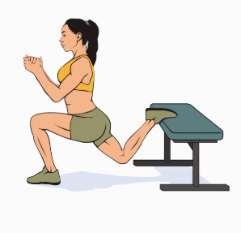

O que é?
O agachamento búlgaro é um exercício de perna que trabalha principalmente o quadríceps e os glúteos, promovendo o fortalecimento e hipertrofia desses músculos. Assim, o agachamento búlgaro é um ótimo exercício para ser incluído na rotina de treino de membros inferiores.
Esse exercício pode ser realizado apenas com o peso do próprio corpo ou usando halteres, além de também poder ser feito com cadência, o que pode deixar o exercício mais intenso.
